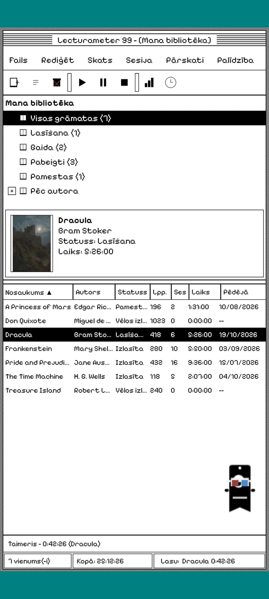
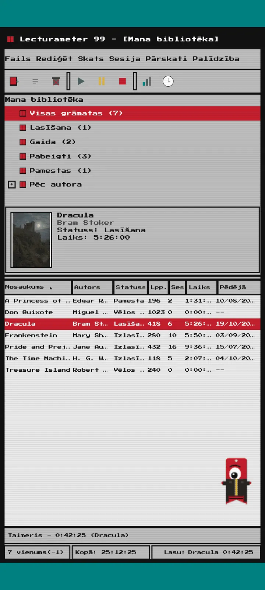
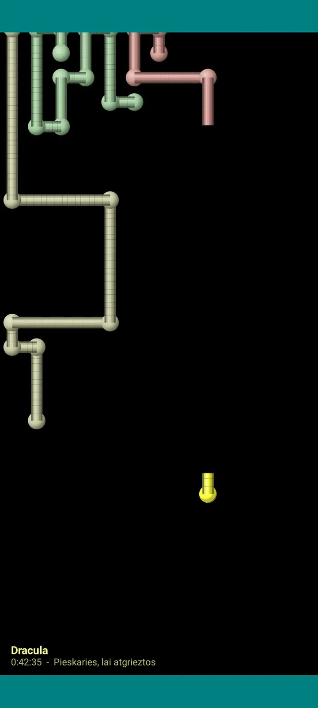

Lecturameter 1999
Lecturameter tā, it kā tu to būtu instalējis no CD-ROM 1999. gadā. Alternatīvs lietotnes klients ar logiem, izvēlnēm un tabulām, kas atver tavas īstās dublējumkopijas.

Kas tas ir
Deviņdesmito gadu beigu galddatora programma tavā telefonā. Viens logs uz zilganzaļas darbvirsmas, izvēlņu josla, rīkjosla, mapju koks, blīva tabula un statusa josla.
- Bibliotēkas koks: visas grāmatas, lasu, gaida, izlasītas, pamestas un pēc autora
- Tabula ar nosaukumu, autoru, statusu, lappusēm, sesijām, laiku un pēdējo lasīšanu. Pieskaries kolonnas virsrakstam, lai kārtotu
- Īsta grāmatu meklēšana, izmantojot to pašu katalogu, ko Lecturameter
- Importē un eksportē Lecturameter dublējumkopiju un Goodreads CSV. Tavi dati ienāk un iziet, neko nezaudējot

Kāpēc tas pastāv
Eksperiments: no jauna uzbūvēt Lecturameter ideju pēc radikāli atšķirīgiem dizaina principiem, neaizskarot īsto lietotni. No visām interpretācijām 1999. gada versija man patika visvairāk, tāpēc es to pabeidzu kā jautru vingrinājumu un pārvērtu par pilnvērtīgu klientu. Tā ir apzināti vienkāršāka par Lecturameter: tas ir eksperiments, un principā tālāk tas netiks attīstīts.
- Taimeris peldošā logā ar zaļu LCD displeju. To var pārvietot, minimizēt uz uzdevumjoslu, un tas turpina skaitīt statusa joslā
- Kad apstājies, sesijas saglabāšanas dialogs prasa lappuses un aprēķina tavu tempu, tieši kā Lecturameter
- Saglabātās sesijas ir Lecturameter sesijas: tās atgriežas modernajā lietotnē, ja eksportē Lecturameter 1999 dublējumkopiju un importē to Lecturameter.

Lasīšanas atskaite
Statistika ir drukāta atskaite: kopsavilkums, laiks katrai grāmatai ar bloku stabiņiem, ātrums lappusēs dienā, gada kalendārs, uzzīmēts ar rakstzīmēm, un pēdējās septiņas dienas.

Sesiju vēsture
Sesijas grupētas pēc grāmatas kokā ar plusiem un mīnusiem, un augšā pieci skaitļi: sesijas, kopējais laiks, lappuses, lappuses minūtē un lappuses dienā.

Saglabāt sesiju
Datums, minūtes, pirmā un pēdējā lappuse, komentārs. Kopsavilkums aprēķina lappuses un tempu, kamēr raksti. Ja sasniedz pēdējo lappusi, tas pajautā, vai esi pabeidzis grāmatu.

Pagi 99
Arī Pagi dodas uz 1999. gadu: pikseļots un brīvi klīstošs pa ekrānu kā tā laika biroja palīgi. Vari to vilkt, pieskaroties tas pasaka kādu frāzi, un tas rāda padomus dzeltenos burbuļos.
Tēmas
Klasiskā 98 ir bezmaksas un noklusējuma tēma. Komplekts pievieno vēl sešas, katrai savs fons un savas skaņas.

Izvēlies to izvēlnē Skats
Skats, Tēma... atver logu ar septiņām tēmām. Izmaiņas uzreiz attiecas uz visiem logiem, taimeri un Pagi.
- Klasiskā 98, bezmaksas un pēc noklusējuma: pelēki logi, tumši zilas virsrakstjoslas un zilganzaļa darbvirsma
- Tēmu komplekts: 1984, Želejkonfekte, Atmiņa, Torņi, Kodols un 8 biti
- Katrai tēmai ir savs darbvirsmas fons un savas skaņas pieskārieniem, logiem un taimerim
- Skats, Tēmas skaņas izslēdz skaņas, ja lasi klusumā

Klasiskā 98
Pelēki logi, tumši zilas virsrakstjoslas un zilganzaļa darbvirsma. Bezmaksas, ar to lietotne atveras.

1984
Viena bita melnbalta darbvirsma ar punktu rakstiem un kvadrātveida logiem.

Želejkonfekte
Caurspīdīga krāsaina plastmasa, noapaļotas pogas un svītras fonā.

Atmiņa
Deviņdesmito gadu disku konsoles izvēlnes tumši zilos toņos.

Torņi
Vēl viena deviņdesmito gadu disku konsole, nakts zila ar gaiši zilām līnijām.

Kodols
Melna un zaļa konsole, kā ekrāns, kas nekad neizslēdzas.

8 biti
Resni pikseļi, maz krāsu un kantaini burti.

Izmēģini pirms maksāšanas
Pieskaries bloķētai tēmai, un visa lietotne pārslēdzas uz to. Ja aizver, neko nenopērkot, atgriežas iepriekšējā tēma.
Ekrānsaudzētāji
Tie parādās tikai tad, kad darbojas taimeris un tu neaiztiec telefonu. Tie gaida 1, 3 vai 5 minūtes, vai nekad. Viens pieskāriens, un esi atpakaļ, taimeris turpina skaitīt.

Lidojošās grāmatas
Pikseļu grāmatas, kas lido pāri melnam ekrānam, vēcinot vākus.

Burtu lauks
Burti no daudziem alfabētiem lēni slīd garām kā zvaigžņu lauks.

Lappušu caurules
Caurules no lappusēm, kas pašas zīmējas, līdz piepilda ekrānu.

Lēkājošais Pagi
Pagi atlec no ekrāna malām.

Lasīšanas pulkstenis
Sesijas laiks lieliem LCD cipariem.

Pagi kostīmi
Astoņi kostīmi Pagi 99. Tos izvēlas sadaļā Skats, Pagi kostīms..., un vari tos uzlaikot pirms maksāšanas.
- Kasešu atskaņotājs
- Otrādi uzlikta cepure
- 3D brilles
- Neona saulesbrilles
- Diskete rokā
- Ādas jaka
- Kabatas mīlulis
- Kartona kronis
Veikals
Lietotne ir bezmaksas un pilnīga lasīšanas uzskaitei. Tas, ko var nopirkt, maina tikai izskatu.
Visa lietotne bez laika ierobežojuma.
- Bibliotēka, meklēšana, taimeris un sesijas
- Lasīšanas atskaite un sesiju vēsture
- Lecturameter dublējumkopija un Goodreads CSV, abos virzienos
- Tēma Klasiskā 98 un Pagi 99
- Bez konta un bez reklāmām
Vienreizēji maksājumi, bez abonementiem.
- Tēmu komplekts, €3.49: 6 tēmas ar fonu un skaņām, kā arī ekrānsaudzētāji
- Ekrānsaudzētāji, €1.99: visi 5 ekrānsaudzētāji
- Pagi kostīmi, €1.99: visi 8 kostīmi
- Viss 1999, €4.49: tēmas, ekrānsaudzētāji un kostīmi
Dzeramnauda pēc izvēles izvēlnē Palīdzība, ja gribi man uzsaukt kafiju.
Tēmas un kostīmus var izmēģināt uzreiz pirms maksāšanas. Ja aizver, neko nenopērkot, atgriežas tas, kas bija.
Kas mainās salīdzinājumā ar Lecturameter
Tāpat kā Lecturameter
- Tie paši dati: grāmatas, sesijas, statusi, vērtējumi un piezīmes. Dublējumkopijas fails abās lietotnēs ir vienāds.
- Grāmatu meklēšana pēc nosaukuma vai autora.
- Īsts taimeris: tas turpina skaitīt fonā un pat tad, ja aizver lietotni.
- Bez konta, bez reklāmām, bez savienojuma, izņemot grāmatu meklēšanu.
- Tās pašas valodas, kas Lecturameter.
Tikai 1999 versijā
- 1999. gada galddatora saskarne. Nekāda Material.
- Īsti logi: tos var vilkt, minimizēt un aizvērt ar krustiņu.
- Lasīšanas atskaite tekstā, ar kalendāru, uzzīmētu ar rakstzīmēm.
- Konteksta izvēlne ar ilgu nospiešanu un tastatūras īsinājumtaustiņi, ja pievieno tastatūru.
- Pikseļots Pagi 99 ar padomu burbuļiem.
- Tēmas pēc izvēles ar savu fonu un skaņām, ekrānsaudzētāji, kamēr darbojas taimeris, un kostīmi Pagi.
Kā tajā nav, apzināti
- Bez Pro un bez abonementa. Lasīšanas uzskaite ir pilnīgi bezmaksas, veikals pārdod tikai izskatu.
- Bez izaicinājumiem, bingo, gada Wrapped un logrīkiem.
- Bez iegremdējošās sesijas, fona skaņām un Google Drive dublēšanas. Dublējumkopija tiek saglabāta kā fails.
Slēgtā testēšana
Lecturameter 1999 ir slēgtajā testēšanā Google Play. iOS versija būs vēlāk, datums vēl nav zināms.
- Pievienojies grupai groups.google.com/g/lecturameter-1999
- Piesakies par testētāju vietnē play.google.com/apps/testing/com.lecturameter.r1999
- Instalē to no Google Play
Slēgtajā testēšanā Google Play, iOS vēlāk. Izlasi bloga ierakstu , lai uzzinātu, no kurienes tas radies un ko gaidīt.